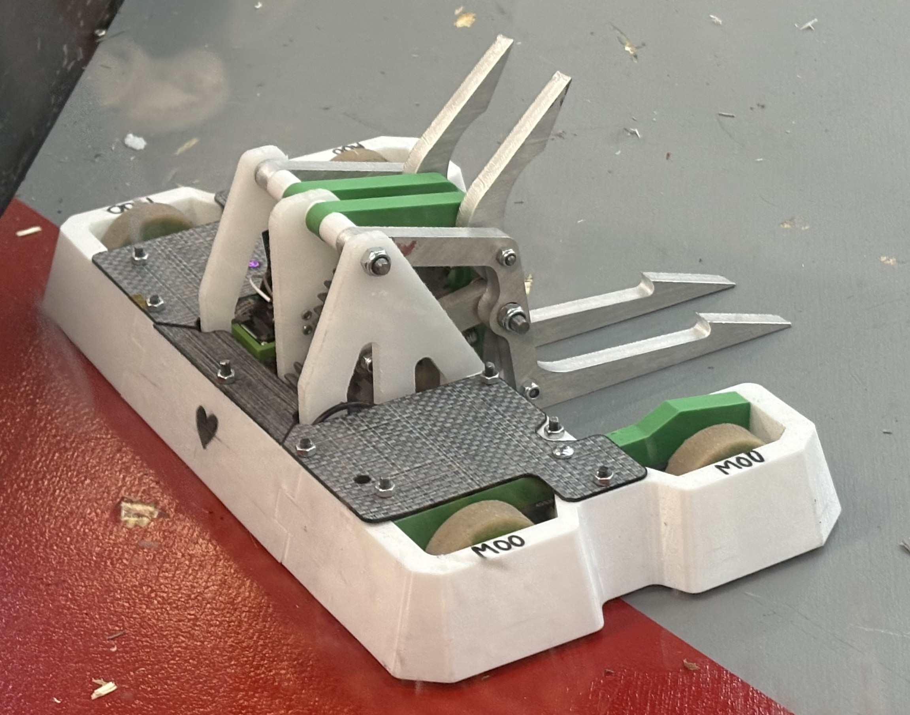
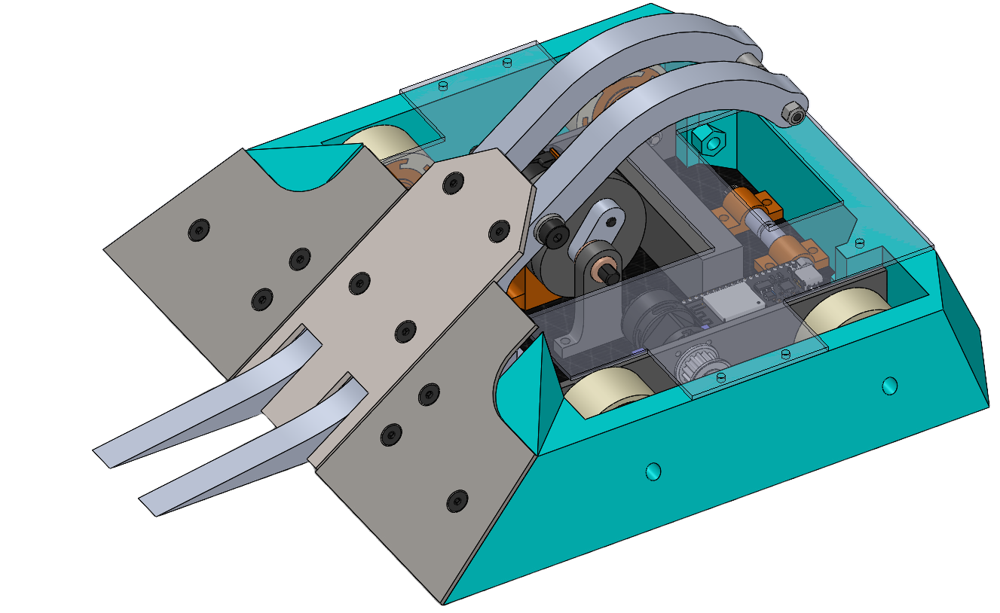
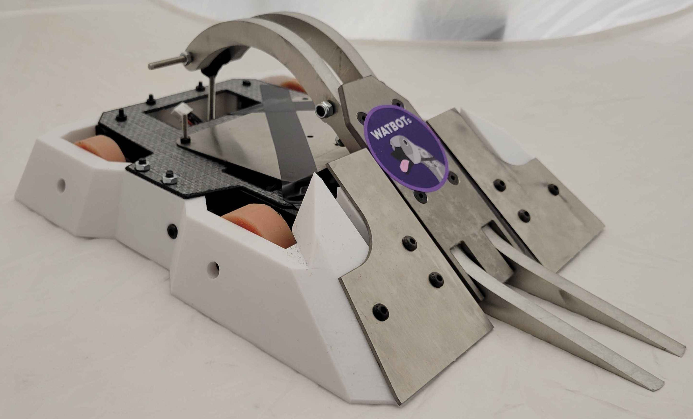
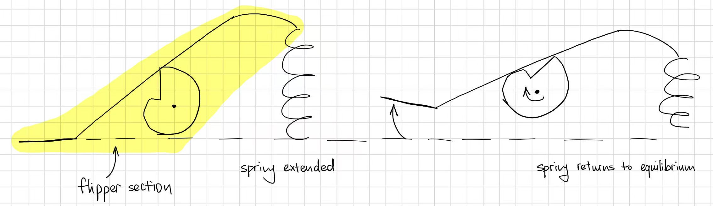
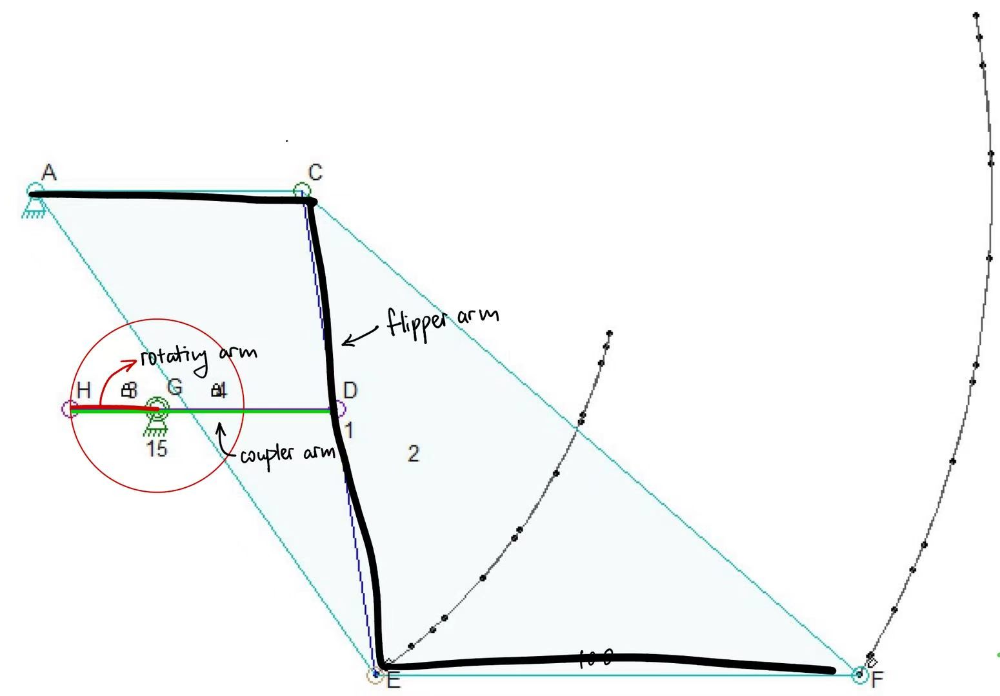
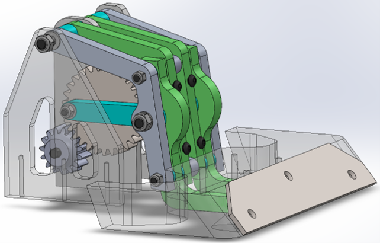

Fly Away is one of WATBOTs’s (the University of Waterloo’s combat robotics team) 3lb robots, and it was both my starting project in the team and my co-op project.
In BotBrawl (Canada's robot fighting league), matches are judged on damage, control, and aggression. Fly Away was designed explicitly as a control bot. The core strategy for Fly Away is to gain control points by pinning opponents against walls with fork/wedge configuration or flipping them with a lifting mechanism.

The initial version attempted to store energy using a snail cam mechanism paired with heavy extension springs, aimed at launching opponents into the air.



In the initial testing stage, a plastic model of the flipper was used with less stiff springs and a lighter load, which was misleading on how well the flipper would work once fully finished.
Mechanism failure: Material deformation and improper component placement caused the spring to pull the entire flipper structure upward rather than releasing kinetic energy through the arm.
Anime North 2026: Due to a tight 2-week manufacturing timeline, tolerance stack-up on the cam and over-stiff springs prevented proper deployment. The weapon was removed hours before the competition, converting the bot into a static wedge to gain driver experience.
The design transitioned from a flipper to a crank-and-rocker four-bar linkage lifter. A linkage simulation software was used to tune arm ratios to maximize lifting height while keeping the flipper system a reasonable size.


Modular Attachments: Implemented interchangeable front attachments – forks for vertical spinner opponents, and wedges for horizontal spinners to prevent weapon damage.
Gear Reductions: Driven by a dedicated high-torque gear motor mated with a 1:2 spur gear reduction to prevent parts from hitting each other internally.
Drive & Geometry: Shifted to rear-wheel drive with extended front caster wheels to prevent tipping forward when lifting opponents.
Materials were specifically chosen to balance weight constraints with impact resistance against high-speed spinning weapons
| Part Name | Material | Description |
|---|---|---|
| Outer Shell & Wedges | TPU | High impact absorption, flexibility, and crack resistance against weapon hits. Custamizable 3D print settings allowed for weight savings. |
| Bottom Plate | Carbon Fiber (1mm) | Provides extreme rigidity and structural strength at minimal weight. |
| Top Plate | Tegris (1.4mm) | Lightweight, highly impact-resistant armor protecting top electronics. |
| Flipper Uprights | UHMW (1/4 inches) | Rigid, lightweight material supporting high-stress arm pivot points. |
| Inner Supports & Mounts | ABS / Super PLA+ | Dimensional stability and customizable 3D printed geometry. |
| Arms & Forks | 6061 Aluminum (3/8 inches) | High strength-to-weight ratio for primary load-bearing linkage arms. |
| Fork Plate | AISI 304 Stainless Steel (1mm) | Good strength to weight ratio, worked well in both design iterations. |
| Wedge Plate | Ti-6Al-4V Titanium | Good strength-to-weight ratio to deflect low blades. |
Competing at the BotBrawl Summer Classics validated the overall mechanical improvements, while exposing critical areas for future iteration:
Design for Assembly (DFA): Version 1 required a very specific teardown sequence. Version 2 eliminated unnecessary top plate and side chassis fasteners, and had an independently removable lifter system.
Wire Management: Planned wire routing paths ahead of time instead of blindly stuffing electronics into the robot to prevent loose solder joints/snapped wires during high impacts. Better wire management also allows for easier repairs between matches.
Identified Failure Modes: Lack of an inverted self-righting mechanism remains a vulnerability when being tossed around. Radio control should be implemented since it does not have latency issues, unlike Bluetooth control.